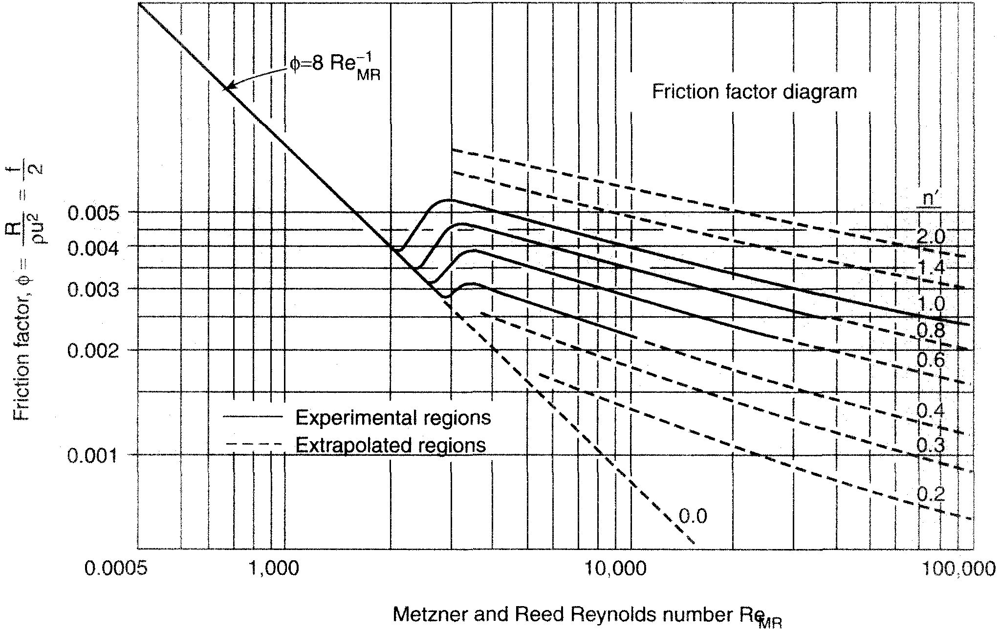

Generalised Reynolds Numbers
- The vector continuity equation and momentum balance equation are the same in all coordinate systems \begin{align*} \frac{\partial \rho}{\partial t} &=- \nabla\cdot \rho \boldsymbol{v} & \rho\frac{\partial \boldsymbol{v}}{\partial t} &= -\rho \boldsymbol{v}\cdot\nabla \boldsymbol{v} + \nabla\cdot\boldsymbol{\tau} - \nabla p + \rho \boldsymbol{g} \end{align*}
- The definition of a vector and the gradient operator change depending on the coordinate system.
- How to solve fluid flow problems for the velocity profile in pipes/cylinders, plates, and falling films.
-
The two simplest models for the non-Newtonian behaviour of
fluids are:
- The Power-Law fluid model for shear-thinning and shear-thickening flows.
- The Bingham plastic model for viscoplastic materials
- How to derive a generalised Hagen-Poiseuille equation for pipes with a non-Newtonian fluid, which relates the pressure drop, pipe geometry and volumetric flow-rate.
- But as Engineers, we will need to be able to derive general design equations for any geometry, viscous model, and to calculate corrections for turbulence.
- Our route to these general design equations is the same that we took to derive the Hagen-Poiseuille equation.
- First, we simplify the balance equations to a point where we can solve for the stress profile. \begin{align*} \rho\frac{\partial \boldsymbol{v}}{\partial t} &= -\rho \boldsymbol{v}\cdot\nabla \boldsymbol{v} + \nabla\cdot\boldsymbol{\tau} - \nabla p + \rho \boldsymbol{g} & &\to& \tau_{xy} &= f(\Delta P, r, R,…) \end{align*}
- During this step the geometry of the system comes into play through the selection of the coordinate system.
- We then take the stress profile and use a viscous model (Newtonian, Power-Law, Bingham plastic) to find an expression for the velocity profile \begin{align*} \tau_{rz} &= f(\Delta P, L, r, R,…) & &\to& v_{z}&=f(\Delta P, L, r, R,…) \end{align*}
- Again the geometry comes into play through the boundary conditions (no-slip condition, moving boundaries, etc.).
- The final step is to convert the velocity profile into a volumetric flow-rate, by integrating the velocity over the flow cross-section. \begin{align*} \dot{V} = \int v_z {\rm d}A = f(\Delta P, L, r, R,…) \end{align*}
- We then have an expression relating the design variables (flow-rate, flow geometry, pressure drop). The most famous example is the Hagen-Poiseuille equation for Newtonian flow in pipes. \begin{align*} \dot{V}_z &= \pi\left(\frac{-\Delta p}{L} + \rho g_z\right)\frac{R^4}{8 \mu} \end{align*}
- In the previous lectures, we used our knowledge of this derivation to repeat it for non-Newtonian flows. We took the stress profile in a pipe along with the Power-Law model and solved them to yield a generalised Hagen-Poiseuille equation for non-Newtonian flow in pipes (Power Law fluids). \begin{align*} \dot{V}_z &= 2 \pi R^2 v_z^{max} \left(\frac{1}{2} - \frac{n}{3n+1}\right) \end{align*}
- This derivation introduced another useful variable, the maximum flow velocity, $v_z^{max}$.
- This is an important property of the flow that (like the volumetric flow-rate) we can derive from the velocity profile.
- All of our characterisation of the flow and design equations come from our knowledge of the velocity profile.
- This is why it is important to be able to derive it, there are too many types of flow-geometries and viscous-models to just memorise all of the forms.
- We've already derived the details for five different classes of flows, multiply this by the number of fluid models and we're talking about a huge range of systems to cover!
| Parallel Plates | Falling Film | Pipe | |
| $\tau$ | $\frac{-\Delta p}{\mu L}\left(y - \frac{H}{2}\right)$ | $\rho g_x\left(Y - y\right)$ | $\left(\frac{\Delta p}{L}-\rho g_z\right)\frac{r}{2}$ |
| $v$ | $\frac{-\Delta p}{2 \mu L}(y^2-H y)$ | $\frac{\rho g_x}{\mu}\left(Y y - \frac{y^2}{2}\right)$ | $\left(\rho g_z-\frac{\Delta p}{L}\right)\frac{R^2-r^2}{4 \mu}$ |
| Pipe Falling Film | Annulus | |
| $\tau$ | $-\frac{\rho g_z}{2}\left(r-\frac{\lambda^2 R^2}{r}\right)$ | $\frac{1}{2}\left(\frac{\Delta p}{L} - \rho g_z\right)\left(r - \frac{\lambda^2 R_0^2}{r}\right)$ |
| $v$ | $\frac{\rho g R^2}{4 \mu}\left(1-\left(\frac{r}{R}\right)^2 -2 \lambda^2 \ln\left(\frac{r}{R}\right)\right)$ | $\frac{R^2}{4 \mu}\left(\rho g_z-\frac{\Delta p}{L}\right)\left(\frac{r^2}{R^2} - \frac{\kappa^2-1}{\ln\kappa}\ln \left(\frac{r}{R}\right) -1\right)$ |
| Bingham Plastic Pipe Flow | Liquid-Liquid Channel Flow | |
| $\tau$ | $\frac{\Delta p}{L}\frac{r}{2}$ | ? |
| $v$ | $\frac{\Delta p R^2}{8 \mu L}\left(2 - 4 X + 2 X^2\right)$ | ? |
| $X=\frac{2 \tau_0 L}{\Delta p R}$ |
- By learning the general method for setting up and solving the continuity and balance equations, we can solve any set of problems.
- But our treatment so far is limited to laminar flows. {http://www.youtube.com/watch?v=p08_KlTKP50}
- These solutions are limited to low flow velocities, high viscosities or small geometries. This can be seen through the Reynolds number: \begin{align*} \text{Re} = \frac{\rho\left\langle v\right\rangle D}{\mu} \end{align*}
- We'll now try to extend our new knowledge to turbulent flows.
- We must be able to identify when the flow transitions from laminar flow to turbulent flow.
- Its easy to visually determine when a flow has become turbulent (contrast the laminar flow at the front of the submarine which quickly transitions to turbulent flow).
- But we must be able to calculate/predict if a designed flow is turbulent or not.
- And we must be able to calculate a pressure drop for the turbulent flow.
- First, we will revise what we should already know for Newtonian fluids in pipes.
- The Reynolds number is a dimensionless number used to characterise flows.
- It is a ratio of the inertial and the viscous forces in the system. \begin{align*} \text{Re} = \frac{\text{inertial forces}}{\text{viscous forces}} \end{align*}
- Viscous forces dampen eddies in the flow and move it towards a laminar flow profile.
- Inertial forces arise from the momentum of the flow and must be damped by the viscous forces.
- If the viscous damping is not sufficient, even small perturbations such as rough walls will cause the flow to become turbulent.
- For Newtonian flows in pipes, the definition of the Reynolds number is \begin{align*} \text{Re} = \frac{\rho \left\langle v\right\rangle D}{\mu} \end{align*} where $D$ is the diameter of the pipe and $\left\langle v\right\rangle$ is the average flow velocity.
-
There are several problems with this simple definition of
the Reynolds number:
- The pipe diameter $D$ is not useful when considering flows in other geometries, such as falling films, annular flow, and flow between two plates.
- The viscosity $\mu$ may have no meaning in non-Newtonian flows such as those of Power-Law fluids.
- For now, we will continue to revise our knowledge of Newtonian flows in cylindrical geometries before considering these problems.
- For Newtonian pipe flows, we find that the fluid can stably transition from laminar to turbulent flow above a Reynolds number of $\text{Re}=2100$.
- Above this Reynolds number, viscous forces are relatively small compared to the inertia of the flow and our laminar design equations such as the Hagen-Poiseuille equation are no-longer valid.
- We then have to resort to empirical fits to determine pressure drops. The Fanning friction factor.
- The friction factor is defined as the ratio of the viscous stress at the walls over the flow's kinetic energy. \begin{align*} C_f = -\frac{\tau_{viscous}^{boundary}}{E^{kinetic}} \end{align*}
- This is similar to the inverse definition of the Reynolds number…
- We already have an expression for the stress at the boundaries, independent of the geometry of the flow: \begin{align*} \tau_{boundary} = \frac{\Delta p}{L}\frac{A_{flow}}{P_w} \end{align*}
- The flow energy per unit volume is given by \begin{align*} E^{kinetic} = \frac{1}{2}\rho \left\langle v\right\rangle^2 \end{align*}
- Which gives us the following general expression for the friction factor: \begin{align*} C_f &= -\frac{\tau_{viscous}^{boundary}}{E^{kinetic}} = -\frac{\Delta p}{L}\frac{2 A_{flow}}{\rho \left\langle v\right\rangle^2 P_w} \end{align*}
- For a pipe, we have a cross sectional area of $A_{flow}=\pi R^2$ and a wetted perimeter of $P_w=2 \pi R$, so the friction factor is then given by the ratio of these values \begin{align*} C_f &= -\frac{\Delta p}{L}\frac{R}{\rho \left\langle v\right\rangle^2} \end{align*}
- We can rearrange this to give us an expression for the pressure drop, in terms of the pipe geometry and the friction factor. \begin{align*} -\Delta p = \frac{C_f L \rho \left\langle v\right\rangle^2}{R} \end{align*}
- This is an empirical design equation for pipes, called the Darcy-Weisbach equation, that allows you to calculate the pressure drop in a pipe if the empirical Fanning factor, $C_f$, is known.
- But we've already come up with one equation for pressure drop which is not empirical, the Hagen-Poiseuille equation. \begin{align*} \dot{V}_z &= -\pi\frac{\Delta p}{L}\frac{R^4}{8 \mu} \end{align*}
- We can put this in terms of the average flow velocity by dividing by the cross sectional area of the flow ($A_{pipe}=\pi R^2$ ) \begin{align*} \frac{\dot{V}_z}{A_{pipe}} &= \left\langle v\right\rangle = -\frac{\Delta p}{L}\frac{R^2}{8 \mu} \end{align*}
- Rearranging for the pressure drop we have \begin{align*} -\Delta p = \frac{8 L \mu\left\langle v\right\rangle}{R^2} \end{align*}
- If we equate the Hagen-Poiseuille equation and the friction, we find for laminar flows that the friction factor is given by \begin{align*} C_f = \frac{8 \mu}{\rho \left\langle v\right\rangle R} = \frac{16}{\text{Re}} \end{align*}
- This is the well-known result that the Fanning friction factor reduces to for laminar flow.
- But for turbulent flow, the friction factor can take on a range of values depending on the roughness of the pipe and the Reynolds number.
- We need experimental results here!
- Step in Lewis Ferry Moody, a tireless hero of fluid flow, who measured the Darcy-Weisbach friction factor for a huge number of materials in 1944.
- Lewis Ferry Moody measured the Darcy-Weisbach friction factor as a function of Reynolds number and pipe roughness and created the Moody chart.
Eengineers and scientists have managed to confuse matters by
using a
Darcy-Weisbach friction coefficient
which is 4
times the Fanning friction factor!
\begin{align*}
f = 4 C_f
\end{align*}
There are other definitions as well, but you can tell which one
you're looking at by checking the expression for laminar flow
and seeing if it is
$64/\text{Re}$
(Darcy-Weisbach), or
$16/\text{Re}$
(Fanning), or
$8/\text{Re}$.

Summary
- We can calculate a Reynolds number for Newtonian flows in pipes. \begin{align*} \text{Re} = \frac{\rho \left\langle v\right\rangle D}{\mu} \end{align*}
- Then we can determine if the flow is laminar ($\text{Re}<2100$ ) or turbulent ( $\text{Re}>2100$ ).
- If it is laminar, we can use the Hagen-Poiseuille equation \begin{align*} -\Delta p = \frac{8 L \mu\left\langle v\right\rangle}{R^2} \end{align*}
- If it is turbulent, we can calculate the pressure drop using the Moody chart to look up the friction factor, and to use it in the Darcy-Weisbach equation. \begin{align*} -\Delta p = \frac{C_f L \rho \left\langle v\right\rangle^2}{R} \end{align*}
- The first generalisation we can easily perform is to non-cylindrical geometries.
- The current definition of the Reynold's number is in terms of the pipe diameter D.
- To use it in non-cylindrical geometries, we just need to use the Hydraulic diameter \begin{align*} D_H=\frac{4 A_{flow}}{P_{wet}} \end{align*} where $A_{flow}$ is the cross sectional area of the flow and $P_{wet}$ is the wetted perimeter of the flow.
- The Reynolds number then becomes \begin{align*} \text{Re} = \frac{4 \rho \left\langle v\right\rangle A_{flow}}{\mu P_{wet}} \end{align*}
\begin{align*}
\text{Re} = \frac{4 \rho \left\langle v\right\rangle A_{flow}}{\mu P_{wet}}
\end{align*}
- This shows the Reynolds number is a ratio of the total inertial forces (momentum) over the total boundary stresses.
- For Non-Newtonian flows, we need a redefinition of the Reynolds number to determine if the flow is turbulent or not.
- The simplest definition is to just take the Reynolds number, and use the apparent viscosity at the wall for the viscosity term \begin{align*} \text{Re}_g = \frac{\rho \left\langle v\right\rangle D}{\mu_{apparent}^{wall}} \end{align*} where $\mu_{apparent}^{wall}= -\left.\tau_{rz}/ \frac{\partial v_z}{\partial r}\right|_{r=R}$
- The problem with this definition in that it's a bit ad-hoc, there is no estimate of the laminar-turbulent transition Reynolds number.
- The wall conditions could also be vastly different to the rest of the flow and so this form is not really useful for predicting pressure drop in turbulent flows.
- Metzner and Reed generalised the Reynolds number $\text{Re}_{MR}$, by stating that the definition of the friction factor for laminar flow stays the same.
- That is, for all flows we have by definition \begin{align*} C_f^{(laminar)} = \frac{16}{\text{Re}_{MR}} \end{align*}
- We then get a definition of the Reynolds number via the general expression for the friction factor: \begin{align*} C_f = \frac{16}{\text{Re}_{MR}} &= -\frac{\Delta p}{L}\frac{2 A_{flow}}{\rho \left\langle v\right\rangle^2 P_w} \end{align*}
- Rearranging for the Reynolds number, we have \begin{align*} \text{Re}_{MR} = -\frac{8 \rho \left\langle v\right\rangle^2 P_w L}{A_{flow} \Delta p} \end{align*}
-
To define the Reynolds number for any type of viscous flow
in pipes we must:
- Substitute our laminar expression for the average flow velocity in terms of the pressure drop.
- We get this expression from the velocity profile.
- And we obtain our velocity profile the same way we have always done, from the balance equations.
- By using this definition, the laminar flow's all collapse onto the same line on the Moody plot (we have found a similarity between the flows).
- It has even been shown in experiments 1 that the laminar-turbulent transition occurs in the same range of Reynolds number for Power-Law fluids, $\text{Re}_{MR}\approx2200$ increasing to $\text{Re}_{MR}\approx3000$ for shear-thinning fluids.
- However, we must resort to measured data to determine pressure loss in the turbulent regime or if the viscous behaviour is highly irregular.
1
Dodge, D.
A.I.Ch.E.,
5, 189–204, (1959)
- For example, in the last lecture, we covered non-Newtonian flows in pipes.
- We derived the velocity profile for a Power-Law fluid as \begin{align*} v_z = v_z^{max}\left(1 - \left(\frac{r}{R}\right)^{\frac{n+1}{n}}\right) \end{align*} where \begin{align*} v_z^{max}=-\left(\frac{\Delta p}{2 k L}\right)^{\frac{1}{n}}\frac{n}{n+1}R^{\frac{n+1}{n}} \end{align*}
- We then integrated over the flow area to obtain the volumetric flow rate \begin{align*} \dot{V}_z&=\int_0^R\int_0^{2\pi}v_z r {\rm d}\theta {\rm d}r\\ \dot{V}_z&=\pi R^2 v_z^{max} \frac{n+1}{3n+1} \end{align*}
- The average flow velocity is given by \begin{align*} \left\langle v\right\rangle&=\dot{V}_z/A\\ &= v_z^{max}\frac{n+1}{3n+1} \end{align*}
- We can rearrange this equation to obtain the expression for the pressure drop as a function of the average flow velocity. \begin{align*} \left\langle v\right\rangle &= v_z^{max}\frac{n+1}{3n+1}\\ \left\langle v\right\rangle &= -\left(\frac{\Delta p}{2 k L}\right)^{\frac{1}{n}}R^{\frac{n+1}{n}}\frac{n}{3n+1}\\ -\Delta p &= 2 k L R^{-(n+1)}\left\langle v\right\rangle^n \left(\frac{3n+1}{n}\right)^n \end{align*}
- Substituting the expression for $\Delta p$ into the general expression for the Reynolds number: \begin{align*} \text{Re}_{MR} = -\frac{8 \rho \left\langle v\right\rangle^2 P_w L}{A_{flow} \Delta p} \end{align*}
- Along with $P_w=2 \pi R$ and $A_{flow}=\pi R^2$ for pipe flow, we have: \begin{align*} \text{Re}_{MR} = \frac{8 \rho \left\langle v\right\rangle^{2-n} R^n}{k}\left(\frac{n}{3n+1}\right)^n \end{align*}
- This is the general definition of a Reynolds number for pipe flow for any Power law fluid.
- We can confirm that we still have the result for Newtonian fluids by setting $n=1$ and $k=\mu$, to yield \begin{align*} \text{Re}_{MR} = \frac{2 \rho \left\langle v\right\rangle R}{\mu} = \frac{\rho \left\langle v\right\rangle D}{\mu} \end{align*} which is the standard definition of the Reynolds number for Newtonian pipe flow.

- Metzner and Reed have created a Moody-style chart for power-law fluids. However, this graph is not as widely applicable as the famous Moody chart.
-
In fact, C&R have some strong advice on its use:
- … the experimental results and extrapolated values are separately designated. Extrapolated values should never be used for non-Newtonian fluids; certainly not the extrapolated values for shear-thickening fluids which should be ignored …
Summary
\begin{align*} \text{Re}_{MR} = -\frac{8 \rho \left\langle v\right\rangle^2 P_w L}{A_{flow} \Delta p} \end{align*}- In summary, by defining $C_f=16/\text{Re}_{MR}$, we can generate the above general definition of the Reynolds number.
- To use it, we have to pick a stress model (Power Law etc.) and then solve the Cauchy momentum equation for the pressure drop in terms of the average velocity, $\Delta{}p\left(\left\langle{}v\right\rangle\right)$.
- Inserting this into the top equation, we generate the general Reynolds number expression.
- This allows us to guess that the fluid will transition to turbulent flow somewhere around $\text{Re}\approx 2000$, as we've collapsed all flows onto the same laminar friction factor; However, we have no pressure drop predictions for turbulent non-Newtonian flows.
-
We have revised the Reynolds number and friction factors
in Newtonian flows.
- For $\text{Re}<2100$, the flow is laminar and we can use our Hagen-Poiuselle equations.
- For $\text{Re}>2100$, the flow may be turbulent and we should use friction factor plots, like the Moody chart.
- We started to generalise the Reynolds number by redefining it in terms of the Hydraulic diameter \begin{align*} D_H = \frac{4 A_{flow}}{P_{wet}} \end{align*}
- We then fully generalised the Reynolds number using the definition of the Metzner-Reed Reynolds number, as \begin{align*} \text{Re}_{MR} = \frac{16}{C_f^{(laminar)}} = -\frac{8 \rho \left\langle v\right\rangle^2 P_w L}{A_{flow} \Delta p} \end{align*}
- We demonstrated how to calculate a Reynolds number for Power law fluids in pipes.
- All of the fundamentals we have covered so far are also covered in the first two chapters of “Transport Phenomenon,” by Bird, Stewart and Lightfoot.
- The work on the Metzner and Reed Reynolds number is in Coulson and Richardson, vol 1, in the chapter on Flow of Liquids in pipes and open channels and in the referenced paper 1 .
1
Dodge, D.
A.I.Ch.E.,
5, 189–204,
(1959)